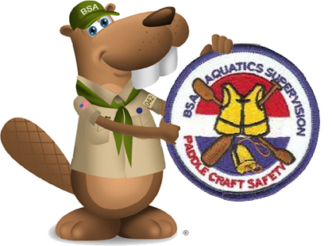
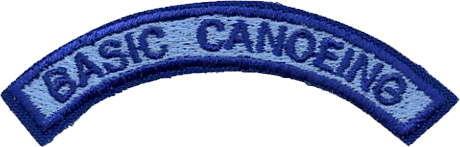
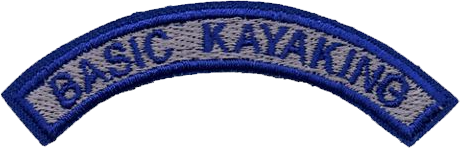
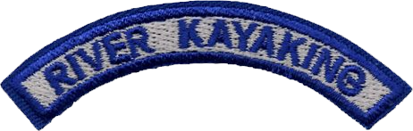

BSA Aquatics Supervision Paddle Craft Safety

Float trips are popular Scouts BSA, Venturing, and Sea Scout activities. Safety Afloat awareness training provides guidelines for safe float trips and is required of unit leaders, but does not provide the skill training mandated by those guidelines. Aquatics Supervision: Paddle Craft Safety – Basic expands Safety Afloat training to include the skills, as well as the knowledge, needed for a unit leader to confidently supervise canoeing or kayaking excursions om flat water. Persons completing the training should be better able to access their preparation to supervise paddle craft activities. The training is open to any registered adult leader, BSA Scout youth member, Venturer, Sea Scout, or Explorer who is age 15 or older. The training must be conducted by a council approved instructor, takes roughly eight hours, and is valid for three years.
Adult and youth first aid training, including CPR, is an important safety consideration for all Scouting activities, not just boating. First aid training is not included in the Paddle Craft Safety course with the expectation that the leader has addressed that need separately, as noted in the course material and on the training card.
Float trips that last overnight also require camping skills. Because Scouting emphasizes outdoor skills in many programs, only items specific to canoeing or kayaking are reviewed in the course material.
BSA Aquatics Supervision Paddle Craft Safety
The program contains four separate modules. Basic Canoeing and Basic Kayaking options cover flat water skills. River Canoeing and River Kayaking options build on the basic programs to include moving water.



Upon successful completion of any, or all, of the 4 course modules within the Paddle Craft Safety training, participants earn the Paddle Craft Safety Patch and the respective discipline segment patch(es) along with their certification card, good for three years. The patches were not specifically designed for wear, hence you will not find display guidelines in the BSA Insignia Guide for these. As such, for those that feel the need to wear these patches, they may be combined and worn as a single temporary patch.
BSA Aquatics Supervision: Paddle Craft Safety – Basic Requirements
PREREQUISITES
1.
Age, physical fitness, and training:
a.
Be age 15 years old or older prior to training.
b.
Submit written evidence of physical fitness.
c.
Complete Safety Afloat training.
2.
Swimming Ability:
Complete the BSA swimmer test: Jump feetfirst into water over the head in depth. Level off and swim 75 yards in a strong manner using one or more of the following strokes: sidestroke, breaststroke, trudgen, or crawl; then swim 25 yards using an easy, resting backstroke. The 100 yards must be completed in one swim without stops and must include at least one sharp turn. After completing the swim, rest by floating.
REQUIREMENTS
3.
Personal safety skills:
a.
Select a life jacket of appropriate size and demonstrate proper fit.
b.
Demonstrate the feet-up floating position used if caught in a current.
c.
Demonstrate H.E.L.P and Huddle positions.
d.
Capsize and swim a boat to shore.
4.
Basic boating skills: Demonstrate the following maneuvers on calm water using standard stroke techniques:
a.
Transport boat from rack or trailer to water’s edge.
b.
Safely board and launch the craft.
c.
Travel in a straight line for 50 yards.
d.
Stop the craft.
e.
From the stop, move the boat sideways first to the right, then to the left.
f.
From the stop, pivot the boat to the right, then to the left.
g.
Return to shore along a curved course demonstrating both left and right turns while underway.
h.
Land, safely exit and store the craft.
5.
Group safety skills:
a.
Throw a rescue bag, laying the line within 3 feet of an object 30 feet away.
b.
Demonstrate a boat rescue of a swimmer.
c.
Demonstrate an on-water boat-over-boat assist.
6.
Correctly answer 80% of the questions on the Paddle Craft Safety written exam covering Safety Afloat, trip preparation, emergency action plans, and basic boating knowledge. Review any incomplete or incorrect answers.
Skills may be demonstrated either tandem in a canoe, or solo in a kayak. If a tandem canoe is used, each participant must demonstrate the maneuvers from both bow and stern positions.
BSA Aquatics Supervision: Paddle Craft Safety – River Requirements
1.
Prerequisities:
a.
Submit written evidence of physical fitness.
b.
Have current Safety Afloat training.
c.
Have current training in Aquatics Supervision: Paddle Craft Safety – Basic for the appropriate craft.
d.
Demonstrate or provide evidence of current ability to complete the 100-yard BSA swimmer classification.
2.
View and discuss the ACA/BSA video *"Reading the Rhythms of Rivers and Rapids"*. (see below to obtain)
3.
Do the following during an instructor-led canoe or kayak trip of at least three miles down a flowing river with Class I or Class II features, including standing waves, a downstream V, and a large eddy. A segment that includes isolated Class II+ or Class III rapids that can be portaged is appropriate, but not necessary. Features and water levels must be consistent with the safe performance of the requirements.
a.
Transport boat from trailer or carrier to river’s edge. Safely board and launch the boat into a current.
b.
Review the effect of basic flat-water strokes in moving water, demonstrating the ability to stay parallel with the current.
c.
Demonstrate knowledge of river signals to communicate with other boats.
d.
Perform a controlled swamp in a current, safely exit the craft, and guide it to shore.
e.
Swim feet first in a current without a boat and catch a throw bag deployed from shore.
f.
Successfully deploy a throw bag to a person fulfilling requirement 3E.
g.
If canoeing, demonstrate a cross draw stroke. If kayaking, demonstrate a low brace.
h.
Demonstrate ability to cross the current using a front ferry.
i.
Demonstrate an eddy turn.
j.
Demonstrate peel out of an eddy.
k.
Stop above a rapid indicated on a river map. Scout the rapid to determine how best to run the rapid and then run it.
l.
Stop above a hole, low-head dam, or other feature indicated on a river map. Scout and portage the feature, even if it can be safely run.
m.
Land, safely exit, and load the boat for transport.
4.
Write a float plan for a troop, crew, or ship covering the stretch of river used for training.
BSA Aquatics Supervision: Paddle Craft Safety Forms, Links, and Resources
Paddle Craft Safety Instructor's Guide
You can request a complimentary copy of the ACA/BSA video *"Reading the Rhythms of Rivers and Rapids"*, by going to this website: http://www.americancanoe.org/page/BSADVD